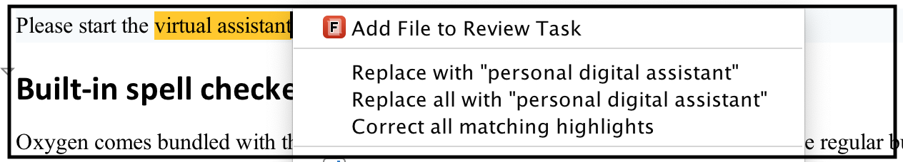

Checking Terminology with Oxygen XML Editor
Built-in spell checker
Oxygen comes bundled with the popular Hunspell spell checker and, along with the regular bundled dictionaries for English, German, Spanish, and French, it allows you to install new dictionaries, either for other languages or custom dictionaries (for example, dictionaries for medical terms) that you can build separately: https://www.oxygenxml.com/doc/ug-editor/topics/spell-dictionary-Hunspell.html.
Aside from the spell checker, Oxygen also has support for Auto-correct and you can add your own Auto-correct pairs to Oxygen, but the spell checker is limited to checking individual words.
Oxygen Terminology Checker
In the main application, you can select Install new add-ons from the Help menu, browse the Default update site, and install the add-on named Terminology Checker. The terminology checker add-on is available for Oxygen version 20.0 or newer.
Once the add-on is installed, it will allow you to highlight matched terms (words or sequences of words) in the Author visual editing mode.
<incorrect-terms>
....
<incorrect-term ignorecase="true">
<match>virtual assistant</match>
<suggestion>personal digital assistant</suggestion>
<message>Prefer 'pda' over 'va'</message>
</incorrect-term>
......
</incorrect-terms>Then go to the Preferences->Plugins / Oxygen Terminology Checker page and in the Terminology Folder text field, reference that folder where your terminology files are located. The incorrect terms that have been previously configured should now be highlighted in current editor in Author mode.
You can right-click the highlights to access various actions that allow you to replace each individual highlight with suggestions or to apply the same suggestion in multiple places in the currently open document.
Commercial alternatives
Acrolinx is a very popular commercial tool for checking content for consistency and terminology. The plugins that Acrolinx developed for Oxygen standalone, Oxygen Eclipse plugin, and Oxygen Web Author allow you to run the Acrolinx checker directly from inside the application.
HyperSTE is another popular commercial tool for checking content and terminology. They also have a plugin for Oxygen standalone.
The Congree Language Checker also has an integration for Oxygen standalone.
Open-source alternatives
LanguageTool is an open-source proofreading program for English, French, German, Polish, and more than 20 other languages . There is an open-source plugin for Oxygen available on GitHub.
The DITA Open Toolkit terminology checker plugin from Doctales contains Schematron rules to check that various words adhere to the terminology dictionaries that are custom built using DITA.
Building your own terminology checker
The fastest and simplest way to build a simple terminology checker is by using Schematron rules. The Doctales plugin is a good example for this.
At some point, as the terminology dictionary keeps growing, you may encounter delays and slow-downs when editing the document and validating it using the custom Schematron rules. So, an alternative to this is by using our Author SDK to build your own Oxygen plugin, which can use our API to check the content and then add highlights. The LanguageTool open-source plugin may be a good starting example for this.